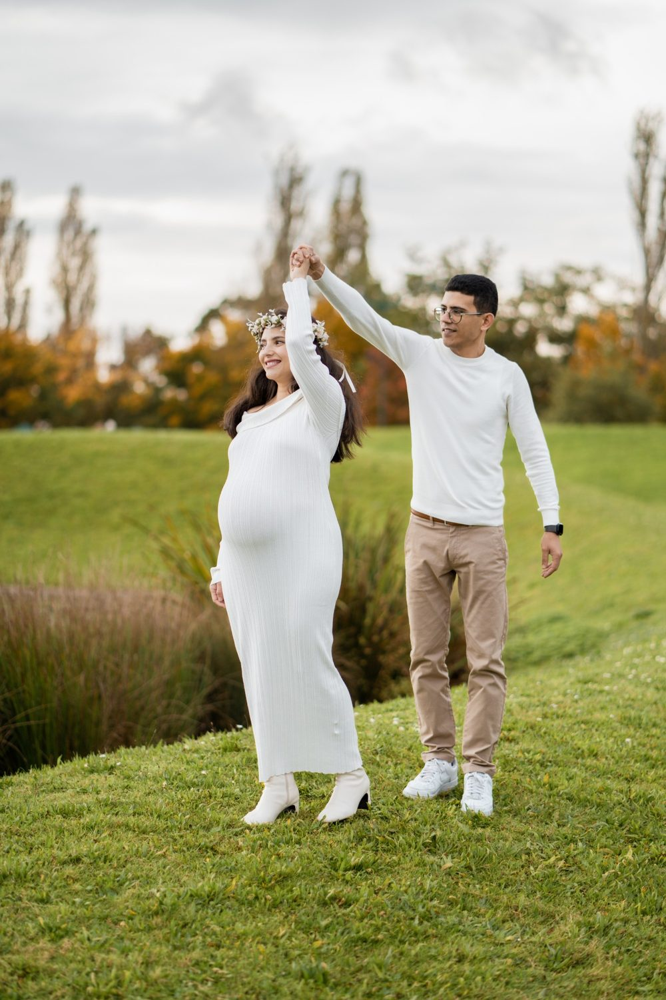
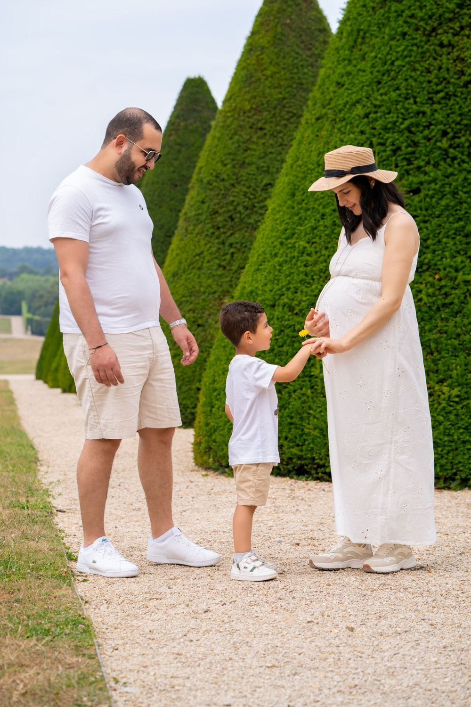

Photographe et vidéaste à Saint-Ouen-sur-Seine
Saint-Ouen-sur-Seine possède le plus grand marché aux puces du monde, des bords de Seine et des docks.
Où photographier à Saint-Ouen-sur-Seine
Marché aux puces
Allées d'antiquaires.
Docks de Saint-Ouen
Anciens docks de brique.
Parc des Docks
Parc contemporain au bord de la Seine.
Mairie de Saint-Ouen
Façade Art déco.
Le bon moment
Chiné, brut, avec des briques.
Les ruelles du marché aux puces sont lumineuses en matinée.
À Saint-Ouen-sur-Seine, nous photographions
Mariage
à Saint-Ouen-sur-Seine
Grossesse
à Saint-Ouen-sur-SeineCouple
à Saint-Ouen-sur-Seine
Famille
à Saint-Ouen-sur-SeineGender Reveal
à Saint-Ouen-sur-SeineProfessionnels
à Saint-Ouen-sur-SeineÉvénements professionnels
à Saint-Ouen-sur-SeineSolo
à Saint-Ouen-sur-SeineAnniversaire
à Saint-Ouen-sur-SeineDiplôme
à Saint-Ouen-sur-SeineNaissance
à Saint-Ouen-sur-SeineNouveau-né
à Saint-Ouen-sur-SeineAvant de nous écrire
Êtes-vous photographe et vidéaste à Saint-Ouen-sur-Seine ?
Oui. Nous intervenons à Saint-Ouen-sur-Seine (Seine-Saint-Denis (93)) pour les mariages, les séances de couple, de famille, de grossesse, les naissances et les événements professionnels.
Quels sont les lieux que vous aimez photographier à Saint-Ouen-sur-Seine ?
Parmi nos lieux favoris : Marché aux puces (allées d'antiquaires); Docks de Saint-Ouen (anciens docks de brique); Parc des Docks (parc contemporain au bord de la Seine); Mairie de Saint-Ouen (façade Art déco).
Comment se déplacer à Saint-Ouen-sur-Seine pour une séance ?
Métro Garibaldi, Mairie de Saint-Ouen. Nous nous déplaçons avec notre matériel et nous préparons l'itinéraire avec vous.
Parlons de votre mariage
Demander un devisAutour de Saint-Ouen-sur-Seine
© Le Couple Photographe · Photographe de mariage Paris & Île-de-France · Mis à jour le 10 octobre 2026
Demander un devis